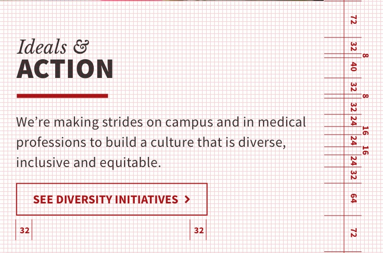

UX Project: Rhythms
Implementing Rhythmic Spacing on the School of Medicine Site
Purpose
The purpose of this project is to examine the current School of Medicine online presence and determine how to create more consistent spacing throughout.
Why Rhythm Spacing?
Implementing rhythms into the spacing of the design layout improves the user experience.
The user will immediately have a more pleasant visual experience as we engage two design principles, repitition and consistency, known to improve a user’s overall satisfaction level of a product.
Rhythmic spacing will increase legibility of text as there is a clear hierarchy and consistent pattern set in place. Also, rhythm spacing will allow for easier and more consistent scaling across multiple screen sizes.
Using an 8px grid
One of the most common grid systems is an 8px grid, part of material design principles.
Using an 8px grid, we allow for spacing text, images, objects, and sections with multiples of 8. In rare occasions, for text or icons, we can use 4px, but for the most part, we stick to a multiple of 8.
What will be changed?
Font Size and Line-Height
Our paragraph text will go from 28px down to 24px. Line-height will be changed to 32px. This will allow for the baseline for each new line of text to lay flat on an 8px grid line.
Margins and Padding
Margins and padding will be changed to a multiple of 8.
Button, Image, and Icon Sizes
If necessary, icons and buttons could follow a 4px grid, however ideally we will follow an 8px grid.
Current Spacing

The current spacing does not use a rhythm in between different elements. While a set line-height is used for text paragraphs, this rhythm does not translate across the board to other areas.
A grid was placed over part of the site to see how spacing aligns between elements. As you can see, elements do not follow any particular order or rhythm.
Proposed Spacing

By adjusting the font size, line-height, margins, and object sizes, we are able to maintain a rhythm that is more aesthetically pleasing to the eye. This particular example shows how the layout is adjusted by using an 8px grid.
We can see in this section how the rhythm works. The top and bottom padding is 72px. Also, font sizes were changed to 32px or 24px, with 16px of padding between each row. This rhythm provides a clean and legible design interface for the user.